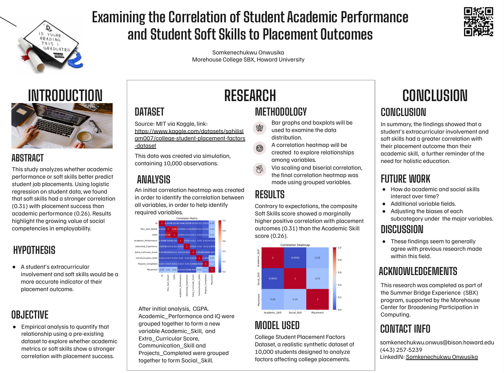

Intro

Curious by nature and driven by purpose, I'm an Electrical Engineering major and Computer Science minor at Howard University with a deep passion for intelligent systems and real-world computing. I'm especially interested in ML on embedded and cyber-physical systems, robust sensing under real constraints, biomedical signal processing, and evaluation strategies for deployment.
I hold multiple honors including Presidential Scholar, Karsh Affiliate Scholar, and Onuoha Fellow, and I'm actively involved in IEEE, NSBE, Colorstack, the HU Quantitative Finance Society (First-Year Liaison), and HU Robotics. I was the 2024 Valedictorian (ranked #1 of 60) at my secondary school and achieved a Top 40 finish in the Nigerian Physics Olympiad 2023.
My long-term goal is to pursue a research-driven career developing intelligent systems that bridge theory and real-world implementation — whether in academia or industry research. Check out my research, experience, and projects to learn more.
Antoine de Saint-Exupéry once wrote, "Perfection is achieved, not when there is nothing more to add, but when there is nothing left to take away." I bring this mindset to every project — striving for clarity, simplicity, and purpose in all I build.
Research
A.N.T.S. — NASA Blue Skies
YOLOv8n Defect Detection

As AI/ML engineer on the A.N.T.S. (Autonomous Nano-Tech Scouts) NASA Blue Skies project, I developed a YOLOv8n-based defect detection pipeline deployed on a Raspberry Pi — achieving TRL 4–5 performance under real hardware constraints. The project focuses on robust on-device inference for structural defect identification in resource-limited environments. Accepted for presentation at ADMI 2026 and CRA UR2PhD 2026 in New Orleans.
FUSION Research Program
University of Florida

Through the University of Florida's FUSION program, I worked on AI-enabled analysis of spatial-omics data and kidney tissue morphology. My research focused on developing hypotheses around diabetic kidney disease and podocyte depletion patterns, applying computational methods — including UMAP and violin plots — to complex biomedical datasets.
Atrial Fibrillation Detection
from ECG Signals

Built a complete ML pipeline for atrial fibrillation detection from electrocardiogram signals. The model achieved 98% overall accuracy with an F1-score of approximately 0.68 and recall of ~0.72 for the minority class on severely imbalanced datasets — tackling one of the core challenges in clinical ML deployment.
To view the source code, click here.
Mastercard CIG x AUC
Data Science Challenge 2026
Competing in the 2026 Mastercard CIG x AUC Data Science Challenge, analyzing healthcare access disparities across the Anacostia River in Washington, D.C. Applied Lasso regression and decision tree analysis to quantify inequities in health infrastructure across D.C.'s Wards 7 & 8, surfacing actionable patterns in an underserved urban context.
Morehouse SBX Exploratory
Data Analysis

As part of the Morehouse Summer Bridge Experience, I carried out an exploratory data analysis project examining the correlation between student academic performance, soft skills, and placement outcomes. Key finding: soft skills (correlation 0.31) predict job placement better than academic performance (0.26). Presented at the 2025 BICE Symposium.
To view the project notebook, click here.
Click here to read the research paper.
And to view the project poster, click here!
Experience

Alcon Innovate Boldly
R&D Externship 2026
Selected as one of 30 students nationally for Alcon's 2026 Innovate Boldly R&D Externship (Fort Worth, TX, August 10–13). Developing two ideate board concepts in the ophthalmic device space: EdgeLens, an embedded YOLOv8n pipeline for intraocular lens (IOL) defect detection, and BioSim-IOL, a patient-specific IOL biological response prediction model. One of the most selective undergraduate R&D experiences in the medical device industry.
Qubit by Qubit
Quantum Summer Institute
Selected for the Qubit by Qubit Quantum Summer Institute on a full NIST scholarship — a nationally competitive program advancing quantum computing education for underrepresented students in STEM.
CRA UR2PhD 2026
New Orleans
Presented undergraduate research at the Computing Research Association's UR2PhD symposium in New Orleans — a selective national forum connecting underrepresented undergraduates with PhD-track research opportunities in computing.
ADMI 2026 Symposium
Presented research at the Association of Computing and Information Sciences and Engineering Departments at Minority Institutions (ADMI) 2026 Symposium, contributing to national discourse on computing research at HBCUs and minority-serving institutions.
BICE/INSPIRE Symposium
Presented research at the Broadening Inclusion in Computing Education (BICE) / INSPIRE symposium, sharing findings from the Morehouse SBX exploratory data analysis project with a national audience of computing educators and researchers.
MedLens — BisonHacks 2026

Served as AI/ML Engineer and Integration Lead for MedLens at BisonHacks 2026 — an AI-powered medical document translator designed for underserved communities. Architected and debugged a full-stack pipeline: OCR → GPT-4o-mini → OpenFDA, delivering a functional prototype that bridges language barriers in healthcare documentation under hackathon time constraints.
Morehouse College SBX

Cohort Member at the Morehouse College Center for Broadening Participation in Computing. Undertook an Exploratory Data Analysis Project and presented work at the 2025 BICE Symposium.
Organizations & Leadership
IEEE — Member, participating in VLSI coursework designing a 64-bit single-cycle processor using RISC-V and Verilog.
National Society of Black Engineers (NSBE) — Active member.
Colorstack — Member of the national community for Black and Latinx CS students.
HU Quantitative Finance Society — First-Year Liaison, bridging new members with the quantitative finance community.
HU Robotics — Member, exploring autonomous systems and hardware-software integration.
Honors & Scholarships
Presidential Scholar — Howard University
Karsh Affiliate Scholar
Onuoha Fellow — Howard University
Full NIST Scholarship — Qubit by Qubit Quantum Summer Institute
2024 Valedictorian — Ranked #1 of 60
Nigerian Physics Olympiad 2023 — Top 40 Nationally
Projects

Below are some of my technical projects:
A.N.T.S. — Defect Detection
on Raspberry Pi (NASA)
Deployed a YOLOv8n object detection model on a Raspberry Pi for structural defect identification as part of the NASA Blue Skies A.N.T.S. project. Focused on robust on-device inference under real hardware constraints, reaching TRL 4–5. Accepted at ADMI 2026 and CRA UR2PhD 2026.
MedLens — AI Medical
Document Translator
AI/ML Engineer and Integration Lead for MedLens at BisonHacks 2026. Built an end-to-end pipeline (OCR → GPT-4o-mini → OpenFDA) that translates complex medical documentation into accessible language for underserved communities, targeting language barriers in healthcare settings.
IEEE VLSI 64-bit Processor

As a member of Howard's Institute of Electrical and Electronics Engineers, I'm taking part in a VLSI course using RISC-V architecture and Verilog to create a 64-bit single-cycle processor.
To view the project datapath, click here.
Spotify Random Song Algorithm

An algorithm that generates a playlist of suggested songs after entering a song from the existing database — similar to Spotify's recommendation engine.
To view the source code, click here.
Click here to see the site in action!
Hair Appointment Website
A website created for a business to help book lace wig installs.
To view the website, click here.
Loan Status Prediction Model
A machine learning algorithm that calculates whether a person is eligible for a loan based on key financial and demographic features.
To view the project notebook, click here.
Python Speech Recognition

A speech recognition tool using the Google Text-to-Speech model to transcribe words.
To view the source code, click here.
NVIDIA Stock Price Prediction

Trained an LSTM model to predict NVIDIA stock prices over time using historical market data.
To view the source code, click here.
Housing Price Prediction Model

A machine learning model that predicts housing prices given property characteristics.
To view the source code, click here.
Titanic Classification Model

Calculated survival chances of Titanic passengers based on key attributes and features using classification algorithms.
To view the source code, click here.
Python Games Collection

A collection of games I coded as a child. Have fun!
To view the source code, click here.
See a demonstration of one of the games!
Certifications

Offering Institution: Massachusetts Institute of Technology, BeaverWorks Summer Institute
Offering Institution: Stanford University
Offering Institution: Duolingo
Offering Institution: Massachusetts Institute of Technology, BeaverWorks Summer Institute
Offering Institution: Massachusetts Institute of Technology, BeaverWorks Summer Institute
Offering Institution: Massachusetts Institute of Technology, BeaverWorks Summer Institute
Contact Me:
I look forward to speaking with you! Also, here are links to my Dropbox and YouTube where I express my more creative side!